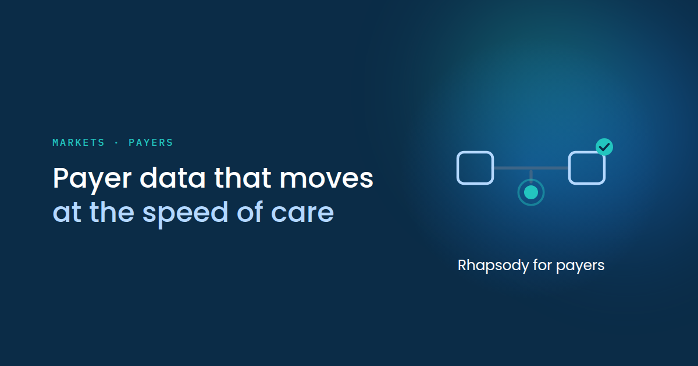
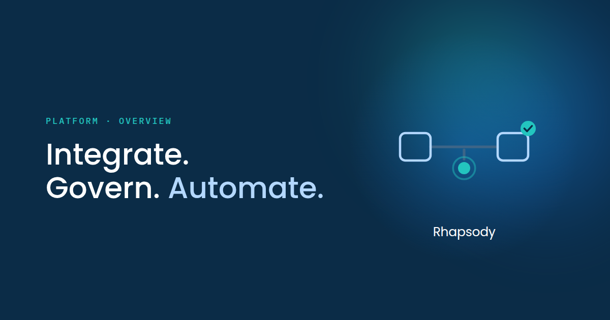

Every rhapsody.health page gets one feature image: the page-header graphic and the image that shows when the page is shared. It is a fixed system with four slots, at 1200 × 630, exported at 2× (2400 × 1260 PNG). Fill the slots; leave everything else alone.

A one-sentence headline: no end period, emphasis in light blue.

A short stack at 58px: a multi-sentence headline takes a period after each sentence, with the last two words glued so no line is a single word.
The fixed system
Ground: navy with the Aurora glow, always top right, behind everything.
Layout: two columns, text left (1.5 parts) and motif right (1 part), with 90px side padding and a 36px gap. The columns are the safe margin, so text never overlaps the motif.
Type: the IBM Plex Mono eyebrow in teal (teal type is approved on navy) and the Poppins Medium headline in white with a light-blue emphasis.
The four slots
Eyebrow. Section and page, for example “Markets · Payers” or “Webinar · Nov 19 · 12 p.m. CT”. IBM Plex Mono Medium 17px, all caps, 0.17em tracking. If it wraps, break it at a phrase boundary.
Headline. The page H1 in sentence case, Poppins Medium 48px. The second phrase goes light blue. Follow Typography → Headlines: one sentence, no period; two or more short sentences, a period after each. Only three sizes: 48px by default, 46px when slightly long, 58px for one-to-three-word stacks.
Motif. A line illustration drawn in the motif vocabulary below, specific to the page.
Lockup. A short label centered under the motif, Poppins Regular 25px: “Rhapsody for payers” or “Rhapsody Axon™”.
Motif vocabulary
Canvas: viewBox 0 0 200 180; keep everything inside x 10–190, y 14–170.
Outlines: light blue #B4D8FF, stroke 3–3.4; tiles rounded at rx 7–8.
Connectors: #3D6587, stroke 3.5, drawn first so every connector sits behind the shapes. This muted navy-blue is a motif-only line tone, not a palette color.
Teal #23C5BF: the check badge (a filled circle with a navy check) and at most one other accent.
The grounded pulse is the signature: a stem, a teal dot (r8), and a ring (r14.5) at 45% opacity, hanging from the base of the art.
Clean joins: every line ends on a shape or passes fully behind one; nothing floats.
No orphan words
No line of the headline, eyebrow, or lockup may be a single word. Glue the last two words with a non-breaking space, and use a non-breaking hyphen to stop a hyphenated word splitting.
How to make one
In Claude Design: choose the Website Feature Image template, fill the slots in the Tweaks panel, and capture the artboard at 2×. The template glues the last two words automatically.
In code: copy templates/feature-image/source/feature-image-template.html, fill the four marked slots, and run render-feature.mjs. It checks that Poppins loaded and that no line ends on a single word, then writes the 2× PNG and a close-up crop of the motif to inspect before shipping.
Do
Fill only the four slots; keep the ground, glow, grid, and type as they are.
Draw a page-specific motif in the vocabulary, and check it up close.
Use one of the three headline sizes and glue the last two words.
Don’t
Move text into the motif column, add another glow, or change the grid.
Invent headline sizes, or let a line end on a single word.
Add photography, dot devices, or Teddie; the motif is the one visual.